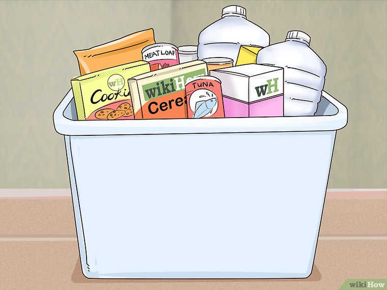
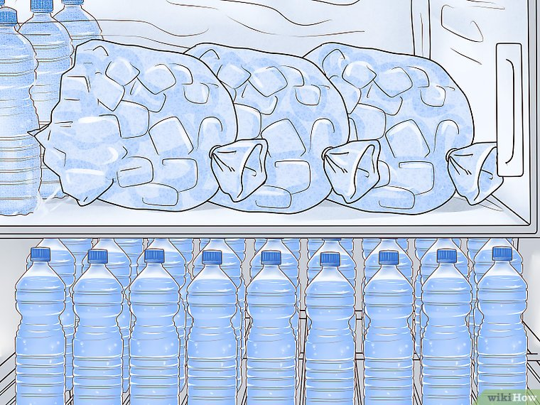
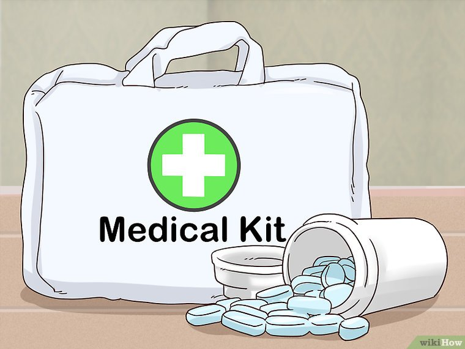
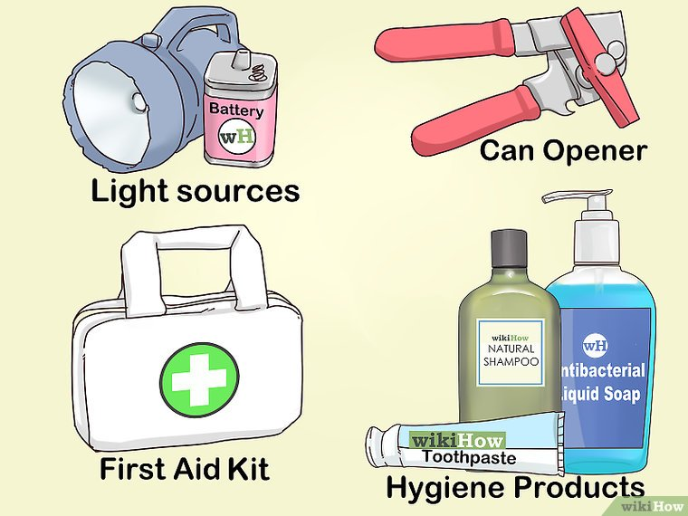

A quick guide for my non-Florida native friends
Buy enough food and water to last a few days. Canned food is the only kind acceptable for an event such as a hurricane; again, check the expiration dates to make sure the food is fresh. Always have these supplies on hand so that you can respond whenever an emergency arises.
Fill up the bathtub with water if you decide to stay home. An average bathtub full of water holds enough water for about three days. It also makes it possible to flush the toilet using a bucket.
Try getting canned food that doesn't require any added water or milk.
An average person needs about 3.5 l of water (one gallon) per day. Pets (dogs) need about 1.75L of water per day. Cats need much less water.
There is a lot of water in the hot water heater of your home. An average 150-liter water heater has enough water to keep a single person alive for a month.
Prepare your fridge and freezer. Do this as the storm enters your area and you settle down for the long haul. Eat perishables first in anticipation of the power going out.
Fill your fridge and freezer with bottled water and sealed non-perishable items. The more full your freezer is, the more items there are to retain the cold and keep the overall temperature down. The same applies to the refrigerator.
Store as much water and fluids as you can in your fridge so that if the power goes out, it will retain the cold longer; hopefully in time for the power to turn back on.
Put all the ice that you have in your freezer into plastic bags. Fill all spaces in your freezer with bags of ice. Freeze water bottles, too.
Have your prescription medication. Be sure that you are well supplied with any prescription drugs that you or your family takes on a regular basis. Some insurers will not honor refills until the last refill is nearly used up or has run out.
If necessary, drugs must be purchased without insurance; weeks may go by without the ability to get refills, putting your health at risk.
If you’re in hurricane season, always have extra medication just case a storm comes in and all the pharmacies close down.
Make sure that you have the necessities. Have the supplies to make it through if you and your family are trapped in your house for a week without access to electricity, running water, and stores.
These materials include things such as light sources (powered by battery or hand crank), a manual can opener, a first aid kit, a NOAA-compatible radio, and hygiene products.
Print out a medical aid guide so that you know how to administer proper care if the situation arises.
Ensure that your house insurance is up to date. Hurricane season is not the time to buy flood insurance since it's either unavailable or outrageously expensive. Most regular home insurance does not include flood coverage in the policy, so you'll have to buy this separately. Just in case the hurricane does do major damage to your home, this will ensure that you’ll be ready and able to rebuild once it’s all over.
Secure your windows. Close all of your doors and windows. If you don’t own hurricane shutters, board up your home’s doors and windows with plywood. This will secure them so that it’s harder for the wind and rain to damage your property. It’s also a good idea to reinforce the garage doors so that everything in there is protected as well.
Learn how to turn off the gas and power to your home. Make sure that all tools needed for the job are easily accessible. If you're not sure how to do this, speak with the gas or electric company for instructions. When the storm hits, you want to be able to enact all necessary safety procedures. Be sure to listen to officials during this time in regards to turning your utilities on and off.
Cut down trees and branches close to your house and car. If a large tree falls onto your house, it can punch a big hole in the roof. If a large tree falls onto your car it can easily be crushed flat.
Designate a "safe room.” This is in case your home's integrity is compromised. The "safe room" should have no windows or exterior doors and preferably only one interior door. This will be a place for you and your family to retreat to if the storm becomes too severe. Make sure to have some supplies already in this space just in case you aren’t able to make more than one trip when retreating here.